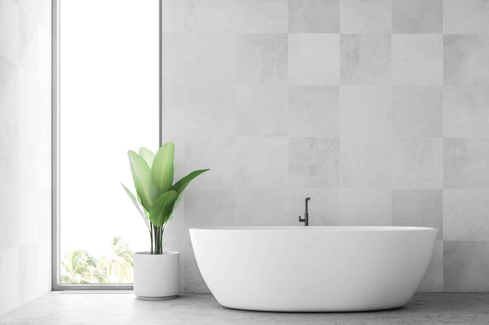

Få hjælp til din fugtskade i Randers og omegn
Fugtskade eller vandskade i hjemmet eller bygningen er vores absolutte spidskompetence.
Helsted Special Rengøring og Skadeservice ApS har i 43 år haft som hovedinteresse at udtørre bygninger efter vandskader. Nu mere end nogensinde har vi gavn af vores erfaringer gennem årene.
Udtørring af bygninger efter vandskader
Vi anvender i dag meget forskelligt udstyr til udtørring f.eks. affugtere, strålevarmere, blæsere, sugere og det nyeste indenfor måleudstyr. Og det bedste af det hele er, at vi ved, hvordan det skal bruges.
Kontakt os i dag for at høre mere om, hvordan vi arbejder med fugtskader i Randers og omegn. Ring gerne på tlf. 20 80 18 50 eller udfyld kontaktformularen.
Vi hjælper også med miljøsanering og skimmelsanering.
Kontakt os